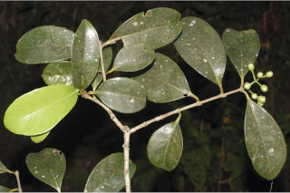
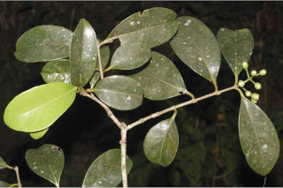

Images :


 



| Habit : | Trees up to 20 m tall. |
| Leaves : | Leaves simple , opposite , decussate ; petiole 0.5-1.5 cm long, canaliculate , glabrous ; lamina 7.5-19 x 2.5-8 cm, elliptic , oblanceolate , apex acuminate and twisted or acute with blunt tip, base acute to cuneate , margin entire , pellucid gland dotted, coriaceous , glabrous ; midrib canaliculate above; intramarginal nerve present (sometimes obscure ); midrib slightly canaliculate above; secondary_nerves 8-12 pairs; tertiary_nerves horizontally reticulo-percurrent . |
| Inflorescence / Flower : | Flowers large, white, in terminal cymes ; pedicels 0.5 cm long; calyx tube obconic . |
| Fruit and Seed : | Berry , 2-2.5 cm across, hemispherical, purple, crowned by calyx lobes . |